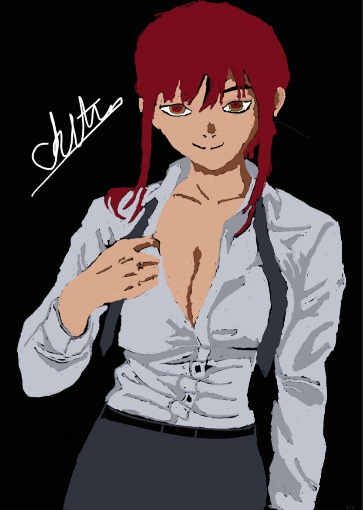

Original figurative sketches & paintings which created by....Chetan Khangar

Makima
Makima is the Control Devil, a being born from humanity's fear of control. She takes the appearance of a young woman with yellow eyes ringed with red concentric circles, and long red hair tied in a single braid. She is usually seen wearing the Public Safety Devil Hunter uniform, resembling that of a security guard. With this appearance, Makima passes herself off as a human contracted to an unknown Devil rather than a Devil in her own right. She uses her intimidating but gentle facade to hide her true nature as a Machiavellian manipulator who desires above all else to control the world and rid it of concepts that she perceives as its "ills". Throughout the series, Makima demonstrates a number of superpowers, including crushing the heads of targets via hand gestures in a telekinetic ritual involving human sacrifices, using rats and crows to spy on enemies, using the finger gun gesture to blast targets akin to an actual gun, and most prominently mind control (albeit only once her true nature is revealed).
Makima appears at the end of the first chapter and first episode of Chainsaw Man, offering main character Denji food and shelter in exchange for his obedience and treating him like a dog, threatening to hunt him down as a Devil if he refuses to comply.[7] Throughout the series, Makima acts as a mentor figure to Denji and teases him with the prospect of romantic and sexual relations, granting him a job as one of her Public Safety Devil Hunters and setting him up with a found family consisting of fellow Devil Hunters Aki Hayakawa and Power.[8] While Makima's morality and goals are kept nebulous for much of the series, she is eventually revealed to be the Control Devil, and the true primary threat faced by Denji. In a ploy to awaken the true Chainsaw Man, which has taken up residence inside Denji as his dog-like companion Pochita, Makima kills the people most important to Denji and destroys his newfound lifestyle to drive him into despair.[9] Despite her best efforts to dominate Chainsaw Man or be consumed by him, Denji and Pochita are able to defeat Makima by the former cooking and eating her body as an act of "love", causing the Control Devil to reincarnate into a new being, Nayuta (Japanese: ナユタ, Hepburn: Nayuta). [10] Later chapters reveal the Control Devil to be one of the setting's Four Horsemen of the Apocalypse, alongside War (Yoru), Famine (Fami), and the then-unrevealed Death.[11]